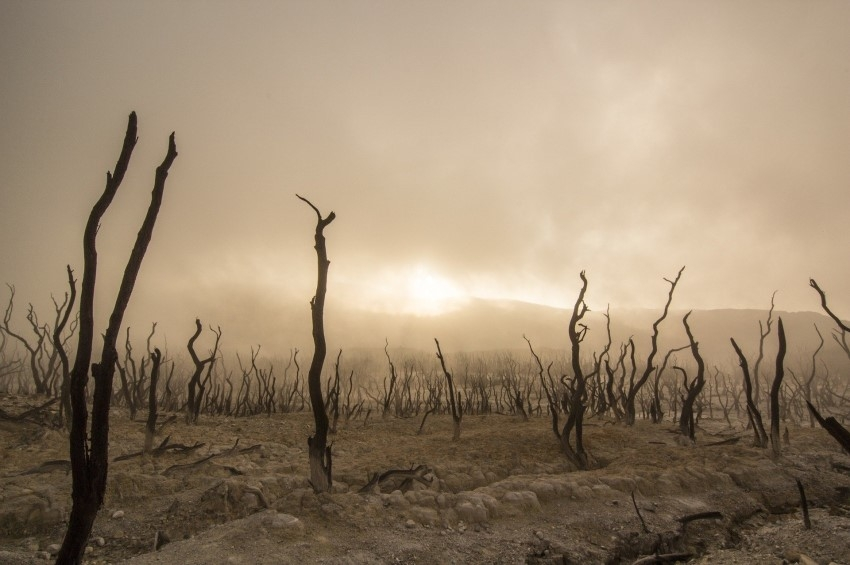

Τα λόγια αυτά είναι μέρος της απάντησης του Κυρίου ημών Ιησού Χριστού, στην ερώτηση των μαθητών Του, «τι το σημείον της παρουσίας Σου, και της συντελείας του αιώνος τούτου;» (κδ:1).
Τα τελευταία λίγα χρόνια όλοι οι άνθρωποι είμαστε μάρτυρες της ταχέως επερχόμενης απορύθμισης του περιβάλλοντος. Επισυμβαίνει σωρεία παγκόσμιων αλληλοεξαρτώμενων αλλαγών που φωνάζουν για την επερχόμενη έλευση του Κυρίου ημών Ιησού Χριστού για να παραλάβει την εκκλησία Του. Όσο πλησιάζουμε τη συντέλεια του αιώνα τούτου (ο καιρός των εθνών) τα γεγονότα θα διαδέχονται το ένα το άλλο με αυξανόμενη συχνότητα και ένταση, όπως οι ωδίνες στην έγκυο γυναίκα που οδηγούν στη γέννα. Πόσο ακριβής είναι ο Λόγος του Θεού! Ο Κύριος είπε: «Ο ουρανός και η γη θέλουσι παρέλθει, οι δε λόγοι μου δεν θέλουσι παρέλθει.» (Ματθ. 24:35).
Οι φωτιές π.χ. στη Καλιφόρνια, ήταν σε πλήρη δράση όταν εμφανίσθηκαν οι φωτιές στη Σιβηρία, την Αλάσκα ακόμα και στην Ανταρκτική! Αμέσως κατόπιν ήλθαν οι φωτιές στα παρθένα δάση του Αμαζονίου και από το Σεπτέμβριο ο πλανήτης παρακολουθεί εμβρόντητος αυτό που έχει χαρακτηρισθεί σαν η μεγαλύτερη οικολογική καταστροφή του 21ου αιώνα: Τις καταστροφικές φωτιές στην Αυστραλία!
Πάντα γινόντουσαν φωτιές στα δάση και μάλιστα αυτός είναι και ένας τρόπος ανανέωσής τους. Ποτέ όμως με τέτοια ένταση και συχνότητα.
Ενώ γράφονται αυτές οι γραμμές, μια έκταση διπλάσια του Βελγίου, έχει ήδη κατακαεί, ανθρώπινες ζωές και περιουσίες έχουν χαθεί όπως και περισσότερα απο έναμισυ δισεκατομμύρια ζώων. Στην πραγματικότητα ο κίνδυνος για την υγεία, διαγράφεται μετά το τέλος της καταστροφής. Όταν ο καπνός και τα αιωρούμενα σωματίδια καταλήξουν στην ανώτερη ατμόσφαιρα και πέσουν, ως βροχή, στη γη θα ποτίσουν τις λίμνες, τη θάλασσα και τα επιφανειακά νερά. Αυτά δηλαδή που θα πιούμε! Δεν υπάρχει τρόπος για αναπλήρωση του χαμένου πλούτου της Αυστραλίας.
Πάνω από 700 ειδικοί επιστήμονες δήλωσαν ότι τα ανωτέρω θα επιταθούν αν δεν περιοριστεί γρήγορα η εκπομπή των αερίων που προκαλούν το φαινόμενο του θερμοκηπίου. Οι επιστήμονες είναι κατηγορηματικοί: «Υπάρχει η κλιματική αλλαγή και αιτία είναι ο άνθρωπος!! Μάλιστα δεν περιμένουμε “καλύτερες ημέρες” αλλά ταχύτατα η κατάσταση θα επιδεινώνεται!!
Ακούμε μία καμπάνα! Η Αυστραλία είναι η πρώτη εμφάνιση, σε τέτοια έκταση, μιάς επερχόμενης πλημμυρίδας κλιματικών φαινομένων, που αύριο θα χτυπήσει την Αμερική, την Κίνα, την Αφρική, την Ευρώπη. Άγνωστο πού. Αλλά μιλάμε για την αρχή»
Μέσα σε όλα αυτά είναι εκκωφαντική η σιωπή του κόσμου για Τον πραγματικό ιδιοκτήτη όλου του Σύμπαντος, τον Κύριο ημών Ιησούν Χριστό. (Ψαλμός κδ΄). «..επειδή δι’ Aυτού (του Ιησού Χριστού) εκτίσθησαν τα πάντα, τα εν τοις ουρανοίς και αυτός είναι προ πάντων, και τα πάντα συντηρούνται δι’ αυτού» (Κολοσ 1:16-18)
Η επιστήμη λοιπόν συμφωνεί με το Λόγο του Θεού, ο οποίος πριν από χιλιάδες χρόνια περιγράφει προφητικά τα όσα διαδραματίζονται γύρω μας. Φανερώνει στον άνθρωπο την πραγματική αιτία και προτρέπει κάθε έναν να επιστρέψει στο Θεό.
«Η γη πενθεί, μαραίνεται, ο κόσμος ατονεί, μαραίνεται, οι υψηλοί εκ των λαών της γης είναι ητονισμένοι. Και η γη εμολύνθη υποκάτω των κατοίκων αυτής· διότι παρέβησαν τους νόμους, ήλλαξαν το διάταγμα, ηθέτησαν διαθήκην αιώνιον.» (Ησαίας κδ:4-5).
Δυστυχώς η ανθρωπότητα, σαν σύνολο, θα συνεχίσει αμετανόητη και πλανεμένη το δρόμο της καταστροφής. Η πρόσκληση είναι ατομική. Ας επιστρέψουμε στο Θεό, πλυμένοι με το αίμα του Ιησού Χριστού.
ομάδα «Χριστιανισμός και Επιστήμη»
Δημοσιεύθηκε στη στήλη της ομάδας στην εφημερίδα «Χριστιανισμός», .